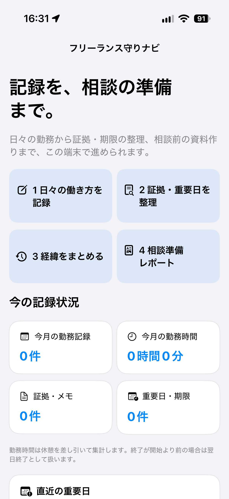
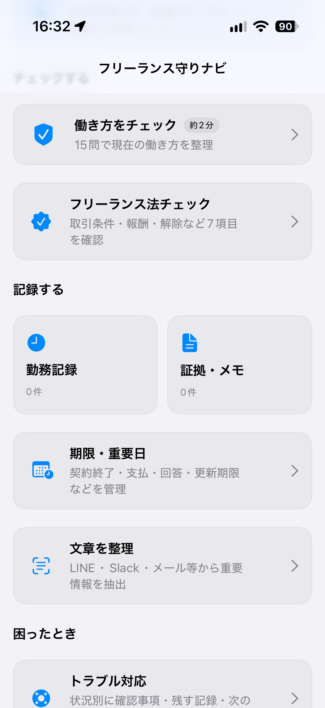
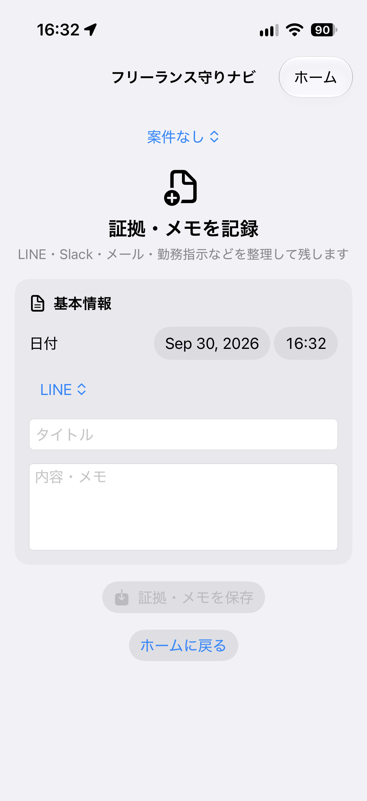

フリーランス・業務委託のための記録支援アプリ
働き方を、
働き方を、
記録で守る。
「フリーランス守りナビ」は、 働き方チェック・勤務記録・証拠整理・相談準備をひとつにまとめ、 万一のトラブルに備えるためのアプリです。
主な機能
日々の記録から相談前の整理まで、必要な情報をまとめて管理。
✓
働き方チェック
勤務時間、場所、指示、シフトなどから 自分の働き方を整理します。
🕒
勤務記録
日々の勤務状況を残し、 後から振り返れるようにします。
🗂
証拠メモ
やり取りや出来事を時系列でメモし、 必要な情報を整理します。
📅
重要日・期限管理
回答期限、支払日、契約更新日などの 重要日を管理します。
📄
レポート
保存した情報を見返しやすい形に まとめることを支援します。
💬
相談前の情報整理
専門機関へ相談する前に、 経緯や記録を整理しやすくします。
実際のアプリ画面
日々の記録から働き方の確認、証拠整理まで。 実際のiPhone画面をご覧いただけます。

ホーム
勤務記録・証拠整理・期限管理・相談準備まで、 必要な情報をひとつの場所で確認できます。

働き方をチェック
働き方チェックやフリーランス法チェック、 勤務記録・証拠メモなどへすぐアクセスできます。

証拠・メモを記録
LINE・Slack・メール・勤務指示など、 重要なやり取りを整理して記録できます。
こんな方に
業務委託・フリーランスとして働く中で、 少しでも「これで大丈夫かな」と感じたら。
業務委託なのに勤務時間や出社日を指定されている
定例ミーティングへの参加を求められている
シフト提出や細かい業務指示がある
突然の契約解除に不安がある
報酬や契約条件の記録を残しておきたい
万一のトラブルに備えて証拠を整理しておきたい
対応OS
Apple製品で使いやすく。
iPhone
Mac
サポート
不具合報告・ご意見・機能改善のご要望はこちらから。
GitHub Issuesで受け付けます。
個人情報・機密情報・契約書の全文などは、
公開Issueへ投稿しないでください。
免責事項
本アプリは、法律相談や個別の法的判断を提供するものではありません。
必要に応じて、弁護士、労働局、労働基準監督署などの専門機関へ
ご相談ください。